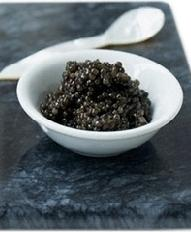

Caviar (tribu urbana)
 De: La Frikipedia, la enciclopedia extremadamente seria.
De: La Frikipedia, la enciclopedia extremadamente seria.
| De la serie tribus urbanas del mundo:
|
| Caviar
|
Ejemplo de la tribu
|
| Típica imagen de un caviar por excelencia
|
|
| Hábitat
|
Son de Lima y provincia pero pululan como moscas en el extranjero
|
| Inteligencia
|
fronteriza
|
| Frase favorita
|
No al TLC
|
| ¿Peligroso?
|
Cada vez que hay debate
|
| Obsesión
|
Todo lo que sea rojo e izquierdista
|
| Notas
|
No confundir con la comida a base de huevadas huevos de pez
|
«Osea pucha estos rojitos que salen con sus mercedes me llegan ¿manyas?»
~ Pituco hablando de sus vecinos caviares de enfrente.
«¡Y a mí me llaman fascista estos izquierdistas malparidos!»
~ Aldo Mariátegui sobre las ideas de sus "amigos" caviares.
«Hey, no sé por qué dicen que soy caviar ps.»
~ Caviar que no sabe que es caviar.
«Oe ¿que eso no era una comida?»
~ Caviar haciendo gala de su intelecto.
Los caviares (homo non-sapiens caviarensis), también conocidos como caviarones, caviarillos, caviarenses, caviarosos, caviarientos o caviarada, son una tribu urbana del Perú.
Bastante despreciables y segregados (aunque ellos se segregan solitos y en six packs), se caracterizan por ser gente idiota que tiene ideas comunistas pero se la pasan viajando al extranjero y viviendo con lujos; en otras palabras, son unos posers.
Descripción
Kurguinzilimpstski con su plato de lujo.
Vamos a ponerlo simple, un caviar es aquel que tiene ideas comunistas pro-Chávez socialisto-marxistas, pero tienen vida capitalista, el que dice ser izquierdista pero vive a la derecha de mi casa, que dice apoyar a los pobres pero sus familiares (y él) se pasean en el extranjero.
El término nace entre delfines de los 80s e inicios de los 90s, cuando un montón de pavos rojos locos querían hacer orgía golpe de estado y darse de hostias mientras comían caca caviar en casa de Kurguinzilimpstski. Luego se pusieron a escribir ensayos sobre la pobreza mientras se refrescaban con vodka y whisky.
Apariencia
Típicos caviares limeños en una fiesta allá en Estoeselcolmo (Zhuezhia) celebrando la victoria izquierdista mientras bailan Neue Deutsche Härte y beben champagne
 Esto también es un caviar, aunque más parece caca de oveja
Los caviares suelen ser de clase media alta, poco alta, casi alta, un poquito más alta, y alta. Cuando quieren dársela de figurettis salen de rojo, pero también usan otros colores. Su ropa siempre es de marcas extranjeras así como todo lo que comen. Generalmente andan por los lugares más caros de Lima y en vacaciones viajan al extranjero.
Es fácil reconocerlos porque suelen ser irascibles cuando les hablan de política y se ponen muy fanáticos, por lo que demuestran el poco cerebro que tienen.
Uno de sus actuales cuarteles de operación clandestina es la Universidad Cacatólica. Muchos de ellos vienen de provincias, del "Perú profundo", pero nadie les cree luego de ver que andan con 4 carros; al único que se le perdona es al Rey de la Papa y al Loco Calato.
Odian los cuys pese a que es un platillo nacional, lo cual demuestra su posería. Al parecer se debe al poder del Cuy Mágico y al PPKuy que los quiso violar. Todos ellos son zurdos porque si salen diestros tendrían que suicidarse a la espartana.
Típico caviar
La bandera de los caviares, nótese la hoz y el martillo hechos de oro puro con chapado de diamante
- El que habla de pobreza desde su penthouse cerca al mar.
- El que sale a figurar con su polo
nazi rojo comprado en Niu York.
- El que aparece en la tv en la mesa de una casa precaria y cuando acaba la grabación se va a
cagar comer al hotel Los Delfines o al Chératon Lima Jotel.
- El que sale de rojo a hacer marchas por la patria estudiando en la Kto (PUCP), UP, UPC, UPTMR, UCH, CTM, RCTMR, ULima, etc.
- El que se asoma de su balcón envalentonado a insultar a los derechistas y centristas... y no baja el pendejo!
- El que saluda con la mano izquierda porque debe abandonar los malos hábitos de usar la derecha.
- El que dice que va a trabajar por su país y cuando acaba su carrera se va al extranjero y no vuelve nunca.
- El que toma Inca Kola en vaso de Coca-Cola.
- El que toma Coca-Cola en vaso de Inca Kola.
- El que habla de lo rica que es la comida criolla y los fines de semana se va al KFC y a McDollar's.
- El que dice apoyar a los músicos peruanos y en su casa tiene puros discos piratas de ellos.
- El que dice que ahora sí apoyará la música peruana pero en casa solo oye eurodance y más euro y menos dance.
- El que ahora dice que esta vez sí apoyará de verdad a la música nacional, pero más tarde se va a un concert de Justin Bieber.
Enemigos
- Aldo Mariátegui, su enemigo a muerte, principal antagonista para ellos. El Némesis de la caviarada limeña y la caviarada de provincia.
- Derechistas y centristas, los caviares los suelen llamar ultraderecha.
- Pitucos, los detestan, sobretodo porque viven en la misma ciudad. Los pitucos los ven como suertudos bajados del cerro o como inadaptados.
- Jebis, pero los de verdad, los odian por ser posers y andar diciéndole NO a la música en inglés.
- Góticos, no todos, pero muchos de ellos; también por ser posers y decirle NO a la música en idiomas extranjeros, especialmente alemán y latín.
- Demás rockeros, hippies, otakus, etc. por solidaridad y las mismas razones que los dos de arriba.
- Estamos Fundidos.
- Pedro Pablo Kuczynski, el mister. Peruano con nacionalidad estadounidense con apellido polaco y padre alemán de origen judío y madre francesa (¿o era al revés?).
- Los "PPKausas", los que consideran al de arriba como su causa (más comida).
- Yukimori y su hija.
- GunZ y Ratzinger Z.
- Los Fachos.
- Gregory House, los quiere inyectar con sida.
- Gordo HombreLibre.
Aliados
He aquí Susana Caperucita Caviarán, actual lidereza de los caviarones en la capita.
- Rusos, el país que siempre los recibe con los
culos brazos abiertos.
- La República Bolivariana Social Demócrata Comunista Marxista de Chavezuela
- Fuerza
AntiSocial.
- Choledo.
- Lallanta Humala.
- Susana Caviarán.
- Los
vagos estudiantes de la Universidad Nacional Mayorista de San Marx (UNMSM), pro-terrucos engañados por la caviarada.
- Punks, los punkekes dicen ser anarkas así que ellos deben respaldar sus ideas
estúpidas.
- Huevo Morrales.
- Kurguinzilimpstski.
- Fideo Castrado.
- Mario Vergas Choza, el lord de los caviares, el marqués que impera entre los caviares.
- Marx el máximo dios de los caviares, dios de dioses caviares, es el opio del pueblo caviar.
- Peluches comunistas.
- Los comunistas.
- León Krusty, el payaso judío.
- Cholo resentido.
- Los que se van a la Feria Nacional de San Marcos.
- Bin Laden.
- Los que viven en la República Independiente de Arequipa (no necesariamente nativos).
- Los "beligerantes" de Sendero Oscuroso.
- Falso anarka, más posers.
- Pseudogothics, pseudojebis.
- Amixers.
-
TeknocaseritosEtnocaceristas
- Los militares, todos ellos fueron violados en el baño.
- Terruquitos.
- La caperucita roja.
| Tribus Urbanas
|
 Universales Universales
 Españolas Españolas
 Argentinas Argentinas
 Chilenas Chilenas
 Colombianas Colombianas
 Mexicanas Mexicanas
 Peruanas Peruanas
 Venezolanas Venezolanas
|

|
Personajes, celebridades y demás figuretis
Internet, música y televisión
|
Autor(es):
- JuanPaBJ16
- Fabriflash
- Generibot
- Pepino-Man10
- Luxan
- Calamardo Tentáculos
Frikipedia 2005-2016, Licencia
GFDL 1.2 - Extraído por FrikiLeaks